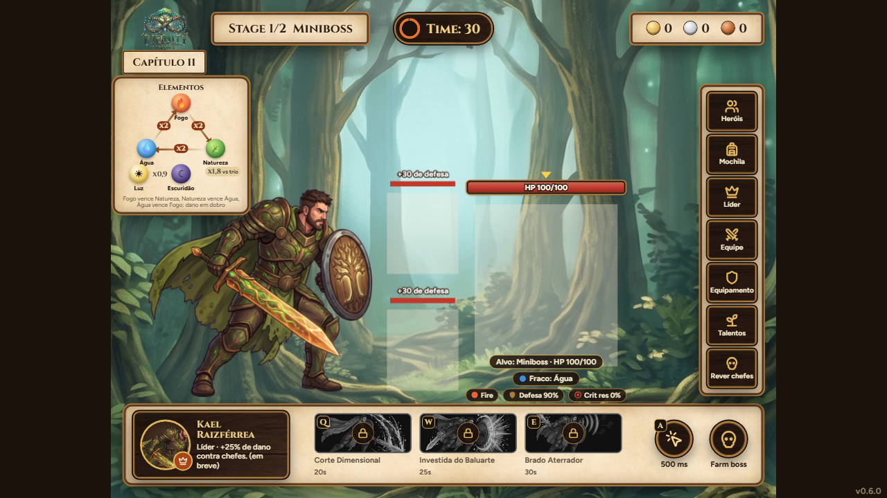
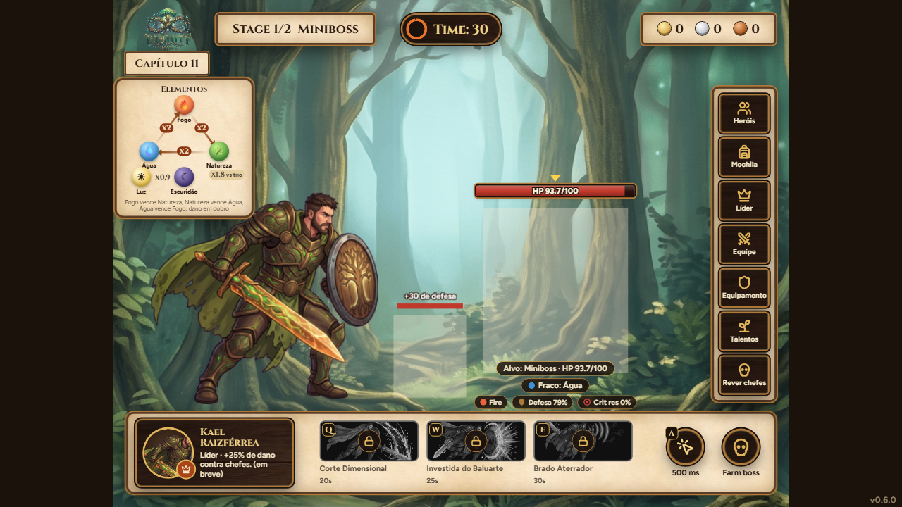
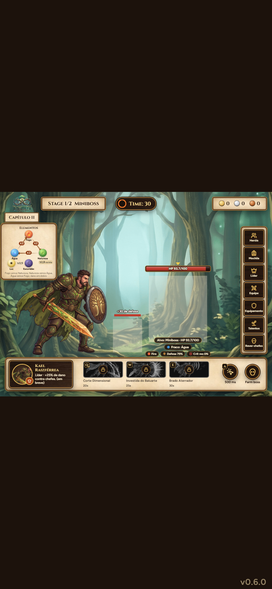
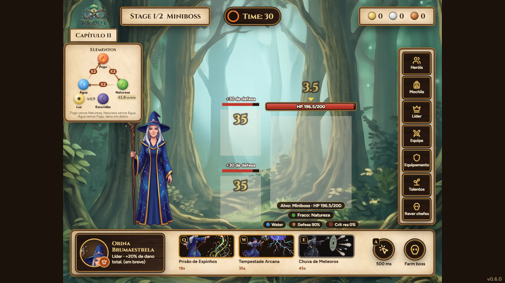
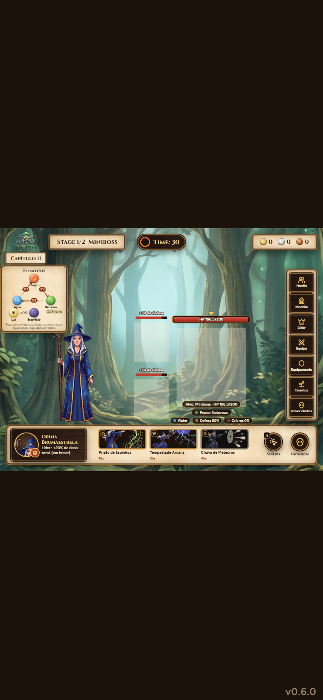
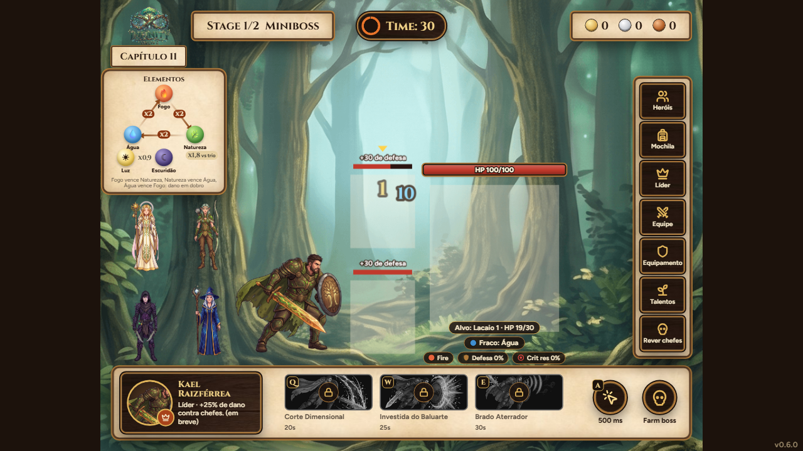
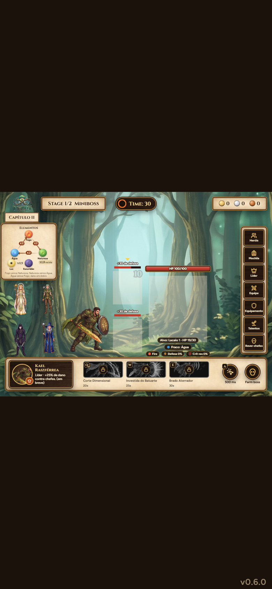
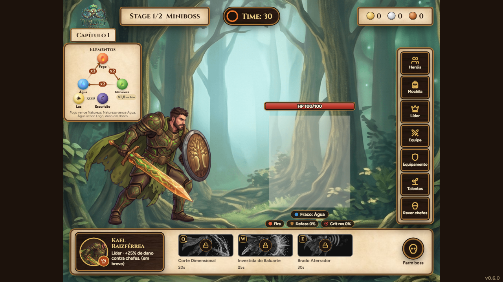
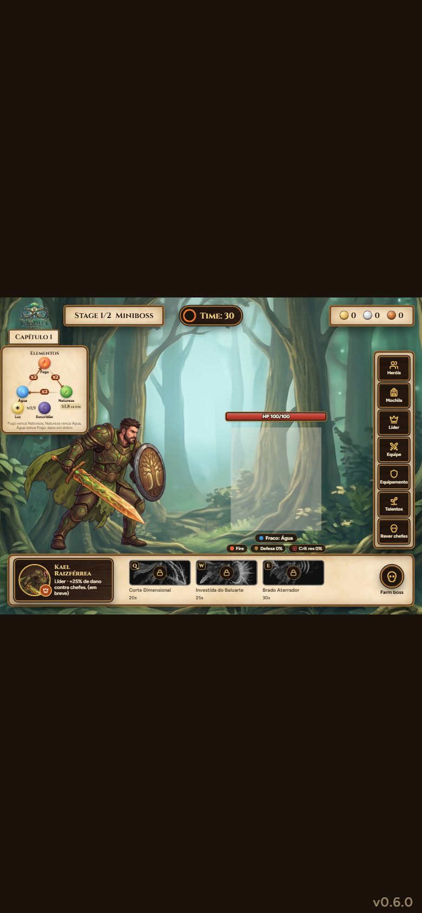

Infinity Grove · Revisão de UI
Lacaios e alvo do miniboss
As sete telas de luta batem com o Fight Layout: lacaios fora da formação e do miniboss, marcador dourado, chip de alvo legível, defesa guardada na linha do inimigo e números no monstro atingido. O chip de alvo sobrepõe cerca de 16 px da base do corpo do miniboss (hoje um retângulo provisório translúcido); lê bem e não bloqueia, e fica como sugestão para o PO decidir quando houver arte final.
7
telas e estados verificados
14
capturas (desktop + celular)
0
achados de severidade alta
0
achados médios e baixos
Fidelidade à spec
- ✓Corpos dos lacaios 110×125 em (480, 360) e (480, 540), coluna x 425–535, sem tocar a formação (x ≤ 410), o miniboss (x ≥ 560), nem a barra de batalha
Fight Layout - ✓Barra de vida pequena de cada lacaio acima do corpo e texto "+30 de defesa" branco com contorno, legível sobre a floresta; marcador, barra e texto não se sobrepõem
Fight Layout - ✓Marcador dourado #ffd24a sobre o alvo, sob os números de dano; segue o clique em Lacaio 1, Lacaio 2 e volta ao miniboss quando o lacaio morre
Fight Layout, ADDS-05 - ✓Chip "Alvo: <nome> · HP x/y" como primeira linha da caixa do inimigo, fundo escuro, borda dourada, texto legível, em português
Player-Facing Texts, Q49 - ✓Linha do inimigo mostra a defesa guardada (Defesa 90%, 79% com um lacaio morto, 0% no lacaio) e a barra grande continua a do miniboss
Q25, Q49 - ✓Números de dano no monstro atingido (clique, habilidade, aliado em azul claro x 520)
Fight Layout - ✓Luta sem lacaios (capítulo 1) sem lacaio, marcador nem chip: igual à de antes
ADDS-01 AC 9
Capturas
S1 · Início da luta com lacaios

S2 · Alvo: Lacaio 1
S3 · Alvo: Lacaio 2
S4 · Lacaio 1 morto


S5 · Números de habilidade


S6 · Com equipe de quatro aliados


S7 · Miniboss sem lacaios (capítulo 1)


Achados
Nenhum achado.
Sugestões
- ✦Sugestão 1 · chip de alvo sobre a base do miniboss. Medido no navegador (desktop): o chip ocupa y 512–533 px na tela e o corpo do miniboss termina perto de y 528, uma sobreposição de uns 16 px (cerca de 18,5 px na cena) em 250 px de corpo. O chip é opaco e escuro com borda dourada, então o texto lê bem; o corpo é só um retângulo translúcido, então nenhuma arte é coberta hoje. Entre o miniboss e a barra de batalha (y 624) há 59 px e as três linhas pedem 65 px ou mais, então não cabe sem sobrepor. Dentro da spec não há correção sem mexer em medidas; se a arte final do miniboss tiver pés ou detalhe na base, o PO decide entre subir o corpo do miniboss uns 20 px ou reduzir as linhas da caixa. Não bloqueia.
- ✦A ponta do marcador (y 258,5) fica a uns 4 px do texto "+30 de defesa" do lacaio; não se tocam, mas está apertado. Se o texto crescer, subir o marcador 2 a 4 px.
Console e recursos
Nenhum recurso faltando: todas as imagens do DOM estavam carregadas (naturalWidth > 0) antes de cada captura. O console do navegador não foi lido nas capturas do Playwright.